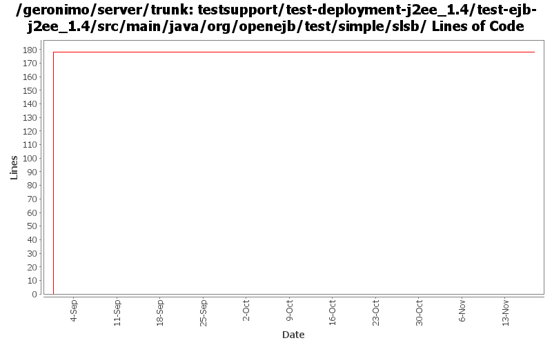

[root]/testsupport/test-deployment-j2ee_1.4/test-ejb-j2ee_1.4/src/main/java/org/openejb/test/simple/slsb

| Author | Changes | Lines of Code | Lines per Change |
|---|---|---|---|
| Totals | 10 (100.0%) | 253 (100.0%) | 25.3 |
| jdillon | 5 (50.0%) | 178 (70.4%) | 35.6 |
| kevan | 5 (50.0%) | 75 (29.6%) | 15.0 |
GERONIMO-2537 Update more src file headers to be compliant with new apache policy. Also made some updates for consistency
75 lines of code changed in 5 files:
(GERONIMO-2352) Adding top-level testsupport module, which contains test-deployment-* modules
This commit is based on the patch from Bill Dudney, only masaged a little change some build config, license headers and artifactIds
Thanks Bill!
178 lines of code changed in 5 files: